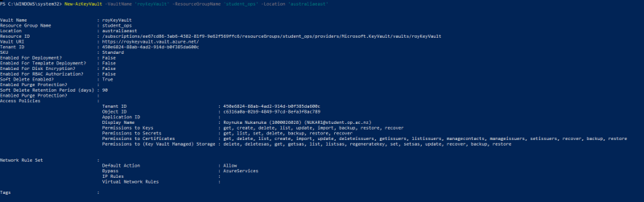
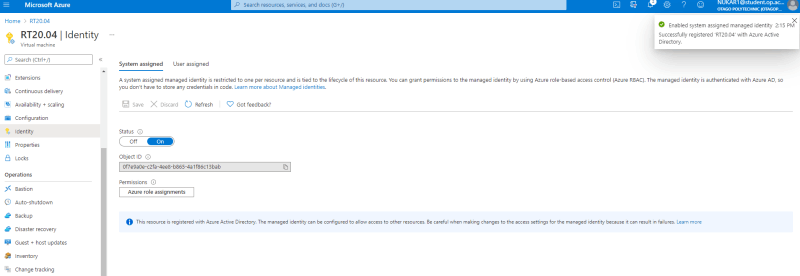
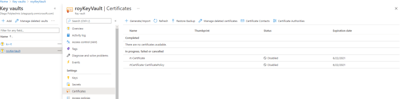

Dev Ops & Security
Purpose
So basically our team leader is "looking for an effective ticketing solution for the Dev Ops team to replace the current Microsoft Teams KanBan Board"
Basically we were to retire our old ways of assigning tasks using the Kanban board on Teams. In my opinion it worked pretty okay for us considering the simplicity of it. But I think a more professional system would be better as ticketing systems is the norm in the industry. At least that's what I got out of it.
This ticket was assigned to myself and Finn. To start things off we had to write up a report or proposal of some sort outlining the system requirements and pricing for it to be done. Of course the ticketing system had to be done using Azure.
Beginning Stages
The fist week was researching our plan and compiling it onto a document for Fasial. Once approved we we're to go ahead and start having some fun and building our resource tracker.
At fist we we're unable to create the VM(s) necessary to start due to not having permission, later fixed by Fasial. At this point I was stil unsure as to how to approach this task as there was not alot of resources online with good tutorials on buiding a RT using Azure. Fasial suggested looking into Azure Dev Ops but Finn and I had already agreed on what to do.
Connecting to the created VM's turned out trickier than it should. I was unable to RDP (remote desktop connection) onto the VM and SSH proved no good as well. This was frustrating because such a simple task chewed a lot of time. I had myself to blame as I was stubborn to ask for help for such a simple task.
For RDP it was refusing to connect whereas for SSH it was due to a public key. I tried using powershell and SSH but it didn't work. Faisal suggested using puttygen to convert the key but even that didnt work either.
Eventually I got it working by following the steps it had on Azure. It was just as simple as opening a terminal where the public key was located and connecting using the command
ssh -i <location of public key> <user>@<VM ip address>
Installation
It took us at least 3 attempts before we we're finally able to get a running RT server working on Azure. By the time we got it working on the 3rd attempt we quickly realized it should have taken at least a good week instead of 3 to get it done. Most of the issues encountered were pretty much dependecies and conflicting packages.
1st Installation
https://docs.bestpractical.com/rt/5.0.0/README.html
The first tutorial we found had was just a README documentation from the website itself. Not alot was explained properly as most of it had to be done ourselves. Long story short we never got past fixing all of the missing dependencies as most of it had to be manually done.
2nd Installation
- https://www.youtube.com/watch?v=t051-l8oqDY
- https://hendgrow.com/ugs/HendGrow-RT5-INSTALL-A-ROBUST-HIGH-VOLUME-TICKETING-SYSTEM-ON-UBUNTU-20.04.pdf
After trial and error with the previous tutorial i needed to find something more that I understood. Luckily I stumbled upon one that not only included a video tutorial but a step-by-step document too plus other helpful links. It proved better to be a success but it was short lived. It fixed the previous missing dependencies but I ran into a mariadb error. Luckily Finn fixed it but there was conflicting packages. He suggested it might be because our ubuntu version was 18.04 whereas the tutorial was 20.04
3rd Installation
This time it went totally smooth with the only minor hiccup being after sucessful login onto RT, it refused to let us create users, groups, tickets etc.
The error being a CSRF. Later fixed by adding a couple lines of code onto config files. Specifically /opt/rt5/etc/RT_SiteConfig.pm.
Now just looking forward to getting onto the fun side of RT5 and getting eveyrything up and running like:
- creating users, groups
- creating tickets
- sending emails, notifications
- setting up security
RT5
Now that we got RT finally installed, it was just a matter of adding more security to our server and having a crash course of how to use RT so we can able to teach the rest of our team. Fasial stated that he wanted the Dev Ops team and hopefully his future papers that he teaches to use this ticketing system.
To access to RT we just had to enter the IP address onto the URL of the website. A breakthrough that we've been trying to achieve for a few weeks after running into a lot of errors with installation and following tutorials online.
Beta Release - I think
One of the things listed that needed to be done moving forward was for our ticketing site to have a domain. Discussions with Finn led to a conclusion that we may need to pay for an actual one ourselves. Before doing so we decided to ask Rob if there was any other solution. Thankfully he alowed us to use the 'op-bit.nz' domain. One of the main reasons being that the ticketing sytem would be an ongoing service that would be used in the future.
To add a domain to the site Azure uses what is called a 'DNS Zone'. This allows custom domains to be added to that 'zone'. Our subscription already had dns zones created for us to there was no need to add our own one since we're using 'op-bit.nz'. From there we added our own record set and named it 'isaacrt.op-bit.nz'. At first it took a while to propagate but Mason suggested that we just adust the record set settings of TTL to '5' and TTL unit to 'minutes'.
Another issue I noticed was that after 'DNS Propagation' I was only able to access using our domain name on mobile devices but couldn't on PC. I asked Rob and he said that 'That’ll be a sync issue. Azure DNS is meant to sync to OP and then to ICT, but it can take a while." So I decided to wait and see how it goes and check overnight.
Azure Key Vault
Key Vault is a service in Azure used to store and access secrets such as API keys, passwords, certificates, or crypto keys.
One of the tasks I was given was to use Azure Key Vault to create a free certificate using 'Let's Encrypt'. Using a partnered provided to tell a Key Vault to create a certificate.
At first it was a little tough for me to understand what was going on. The commands used on the tutorial did not work on powershell for me so I had to do some research for the powershell/azure equivalent. From there I was able to proceed with the tutorial and make progress.